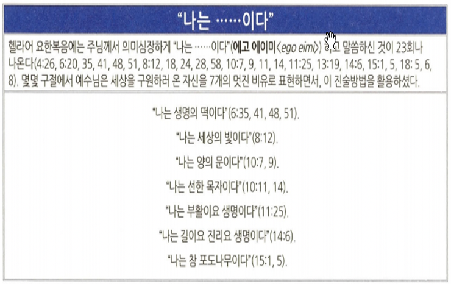
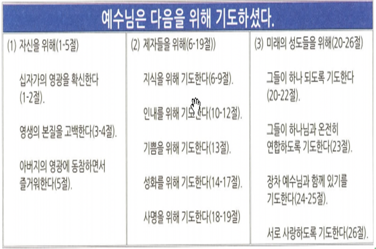

<!doctype html>
<html>
    <head>
        <meta charset="UTF-8">
        <meta name = "viewport" content = "width = device-width, initial-scale=1.0">
        <title>CF1 요한복음</title>
        <link rel="stylesheet" type="text/css" href="../../../css/pages.css">
    </head>
</html>

<body>
    <header>
        <h3><a href = "../../../index.html">HAGUS <br> HARDWARE</a></h3> 
        <ul id="main_menu">
        </ul>

        <script src = "../../../MainMenu.js"></script>
    </header>

    <section class="section">
    <div id = "tag_menu">
    </div>

    <script src = "../../../TIL_tag_menu.js"></script>

    <div id = "tag_list">
        <div class="l_title"><a href = "../../../TIL.html">Class.</a></div><hr>
        <div class = "l_subtitle"><div class = "title"><a href = "../../../TIL.html"><strong>[CF1] 요한복음</div><div id="date">2021.06.12</div></strong></a></div>
             <!--====content====-->
        <div class = "content"> 
<pre>
참 <strong>하나님</strong>이신 예수 그리스도
그리스도의 인성+신성, 성육신의 신비, 성자와 성부의 관계, 그리스도를 믿는 믿음의 중요성을 강조한 복음서


<span class = "h">핵심적인 사실</span>
<strong>저자</strong> : 요한(그의 사랑하는 제자, 세배대의 아들 요한)
<strong>연대</strong> : 66-98년 요한이 에베소에 살던 시기
<strong>장소</strong> : 에베소
<strong>목적</strong> : 예수님은 메시아, 사람들은 예수 그리스도를 믿어야 영생을 얻음
<strong>주제</strong> : 선정된 표적들은 예수님이 메시아 임을 보여줌
<strong>핵심 요절</strong> 
3:16 하나님이 세상을 이처럼 사랑하사 독생자를 주셨으니 이는 그를 믿는 자마다 멸망하지 않고 영생을 얻게 하려 하심이라


<span class = "h">요한복음의 특징</span>
<strong>공관복음과 구별되는 복음서</strong>
- 독자들이 이미 공관복음서를 안다는 전제에서 시작
- 공관복음보다 신학적으로 심오
- 일반적인 전기문학이나 회고록 양식이 아니다

<strong>헬라문화에 익숙한 독자들을 위한 고려</strong>
- “태초에 말씀이 계시니라”-로고스: 예수의 그리스도이심과 하나님의 아들되심 강조
- 영지주의의 잘못된 이론으로부터 기독론을 방어하기 위해

<strong>생명에 대한 강조</strong>
- 요한복음은 인간의 창조의 문맥에서 이해한다.
- 조에(신의 생명)에, 인간- 사르크스(육체), 프시케(영혼)이 그리스도를 통해 참여함

<strong>“I am…"의 강조: 예수님의 자기계시 강조</strong>

<strong>7번의 표적을 일으키는 예수님</strong>

<strong>예수 그리스도에 대한 반응</strong>

<strong>예수님의 십자가: 인자가 들려야 함(3:13-15)</strong>
“하늘에서 내려온 자 곧 인자 외에는 하늘에 올라간 자가 없느니라 모세가 광야에서 뱀을 든 것 같이 인자도 들려야 하리니, 이는 그를 믿는 자마다 영생을 얻게 하려 하심이니라”

<strong>“하나님 나라” 대신에 “영생”의 강조</strong>
영생은 “유일하신 참 하나님과 그가 보내신 자 예수 그리스도를 아는 것”-요 17:3




<strong>본디오 빌라도(5대 총독)</strong>
주후 26년-36년까지 유대, 사마리아, 이두메 지역 총독. 
주후 36년 로마로 소환되어 해임 & 자살로 생애를 마감.

<strong>부자 아리마대 사람 요셉과 니고데모(요3장, 요19:39)</strong>
몰약을 섞은 침향 백근 정도를가지고 장례를 치르러 옴


<span class = "h">예수님의 (십자)가상 칠언</span>
- 아버지여 저희를 사하여 주옵소서 자기의 하는 것을 알지 못함이니이다 (눅23:34)
- 내가 진실로 네게 이르노니 오늘 네가 나와 함께 낙원에 있으리라 (눅 23:43)
- 여자여 보소서 아들이니이다… 보라 네 어머니라 (요19:26-27)
- 엘리엘리 라마 사박다니 (나의 하나님 나의 하나님 어찌하여 나를 버리셨나이까) (마27:46)
- 내가 목마르다 (요19:28)
- 다 이루었다 (요19:30)
- 아버지여 내 영혼을 아버지 손에 부탁하나이다 (눅23:46)


<span class = "h">요한복음의 기독론</span>
- 기름부음 받은자
- 아들
- 세상의 구세주
- 인자
- 말씀(로고스)


</pre>  
    <br>
    <br>
    <br>
    </div> 

    </div>

</section>

    
</body>


